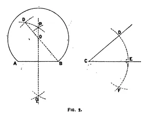
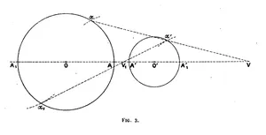
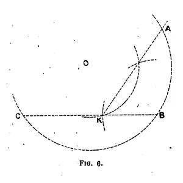
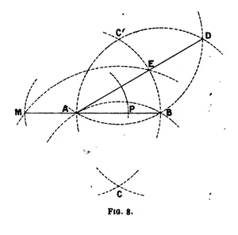

Content of type 'fr'
Introduction
ASSOCIATION FRANÇAISE POUR L’AVANCEMENT DES SCIENCES — Congrès de Pau, 1892. Séance du 16 septembre 1892.

Principes de Géométrographie et division simultanée en 1/10 et 1/15
Nous avons dit plus haut que l’art des constructions géométriques ou Géométrographie reposait sur des principes de la plus extrême simplicité ; la digression à propos des constructions de MM. Chasles et Mannheim nous a fait différer l’énoncé de ces principes ; les voici :

Problème XXVII : Inscrire un cercle dans un triangle donné ABC
XXVII. — Inscrire un cercle dans un triangle donné ABC.
Problèmes XI–XVI
XI. — Par un point donné B sur une droite BC, tracer une seconde droite qui fasse avec la première un angle égal à un angle donné DAE .
Exposition de la théorie de la simplicité et de l’exactitude
Une construction exécutée avec la règle et le compas ne comporte que les opérations élémentaires suivantes :

Problème XLIX : Point déterminé par ses coordonnées normales
La nouvelle géométrie du triangle rend encore plus évident combien il est indispensable de s’occuper systématiquement de l’art des constructions, car tout ce qui se rapporte à elle, en fait de constructions, revient en dernière analyse à la construction des points remarquables, c’est-à-dire de ceux dont les coordonnées normales présentent, exprimés en fonction des éléments du triangle, une symétrie tournante.
Problème XVII : Parallèle menée par un point extérieur
XVII. — Par un point A pris hors d’une droite BC, mener une parallèle à cette droite.

Problème XXVIII : Segment capable d’un angle donné
XXVIII. — Construire sur une droite donnée AB un segment capable d’un angle donné EGD.
Applications I–VII
I. — Tracer une droite quelconque \(\mathrm{op.} : (R_2)\).

Problème XXIX : Tangentes communes à deux cercles
XXIX. — Construire les tangentes communes à deux circonférences données O et O.
Problèmes L–LIII : Centre de gravité G, point de Lemoine K et droite de Lemoine
L. — Placer le centre de gravité d’un triangle ABC.
Problèmes XVIII et XVIII bis : Médiatrice, milieu et symétrique d’un point
XVIII. — Tracer la perpendiculaire en son milieu à une droite limitée par deux points, ou placer le milieu d’une longueur donnée.
Applications VIII–X
VIII. — Porter une longueur donnée (à prendre avec le compas) sur une ligne donnée à partir d’un point indéterminé de cette ligne ou à partir d’un point déterminé de cette ligne :
Problèmes LIV–LXIII : Points de Brocard, Steiner, Tarry, Gergonne, Spieker, Nagel et Neuberg
LIV. — Placer un point de BROCARD.
Problèmes XIX–XX : Centre d’un cercle et perpendiculaires
XIX. — Décrire un cercle sur une droite donnée AB comme diamètre.
Problèmes XXX–XXXII : Division d’une droite en parties égales ou proportionnelles
XXX. — Construire une droite CD qui soit \(n\) fois une longueur donnée AB : 1° sans marquer les divisions intermédiaires ; 2° en marquant les divisions.
Observations diverses : Conventions, notation d’Oran et réponses à Mannheim et Brocard
J’ai traité cette question surtout pour donner un exemple de la façon de discuter les problèmes de construction ; j’ajouterai que les constructions tirées des théorèmes de la géométrie du triangle (comme la construction b de ce point \(W\)) sont, pour ainsi dire, toujours beaucoup plus simples que celles qui sont déduites simplement de la valeur des coordonnées du point à construire, quelque soin que l’on mette d’ailleurs, comme je l’ai fait ici, à économiser les constructions en profitant de toutes les simplifications que la nature des données suggère.
Problèmes XXI–XXIV : Cercle circonscrit et bissectrices
XXI. — Décrire une circonférence passant par trois points donnés.

Problèmes XXXIII–XXXIV bis : Quatrième et troisième proportionnelles
XXXIII. — Construire la quatrième proportionnelle X à trois droites données \(M, N, P\) ; \(X = \frac{N \cdot P}{M}\), ou : Diviser une longueur P proportionnellement à deux longueurs données M et N.
Note complémentaire et Résumé analytique par ordre de matières
Mon ami M. Maurice d'Ocagne, qui a eu l’obligeance de présenter ce mémoire à la Section de Mathématiques, m’a écrit à son sujet une lettre aimable dont j’extrais les lignes suivantes : « … Je crois qu’au point de vue de la spéculation pure, une solution pouvant se résumer dans un langage plus bref sera toujours préférée à une autre, quand bien même celle-ci serait plus simple au sens absolu que vous donnez à ce mot ; il faut bien remarquer, en effet, que la plupart des constructions indiquées en géométrie pure, sont destinées à n’être jamais réalisées effectivement, telles sont les contructions [constructions] de centre de courbure pour les courbes autres que les courbes usuelles ; il vaut mieux, dès lors, qu’elles s’expriment sous une forme plus concise, plus élégante, plutôt que de se traduire par une opération graphique plus expéditive. Cela est loin, d’ailleurs, de supprimer l’intérêt qui s’attache aux ingénieuses considérations que vous avez développées ; celles-ci trouvent, en effet, un vaste champ d’application dans la géométrie pratique et notamment dans la géométrie descriptive. L’art de dresser les épures a tout à gagner à s’inspirer de vos méthodes… Je vous fais part de ces réflexions que j’ai émises à nos collègues de la 1re Section, pour que vous puissiez y répondre… »

Problème XXXV : Moyenne proportionnelle entre deux longueurs
XXXV. — Construire la moyenne proportionnelle entre deux droites données \(M\) et \(N\), \(X^2 = M \cdot N\).
Problèmes XXV–XXVI : Tangentes à un cercle donné
XXV. — Tracer par un point A pris sur une circonférence de centre O une tangente à la circonférence.

Problèmes XXXVI–XXXVII : Moyenne et extrême raison et droites concourantes
XXXVI. — Diviser une droite AB en moyenne et extrême raison.
Problèmes XXXVIII–XLVI : Inversion, polaire, axe radical et conjugué harmonique
XXXVIII. — Placer le point \(A'\) réciproque du point donné \(A\) par rapport à un cercle donné de rayon \(R\) et de centre \(O\).

Problèmes XLVII–XLVIII : Carré de Catalan et axes de l’ellipse
Nous allons compléter cette étude par quelques applications prises un peu au hasard et par quelques remarques qui permettront de comprendre mieux l’esprit et, je l’espère, l’utilité de notre méthode.